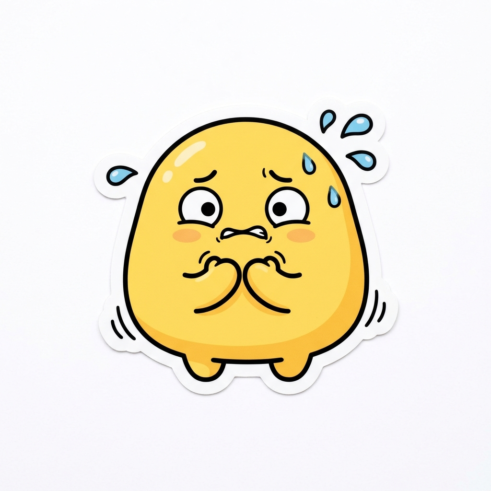

Etapa 1
Conscientização
História
Sente-se ameaçado pela velocidade da IA ou está estagnado. É o "Líder em Risco".
Ações
- Lê notícias sobre layoffs tech.
- Recebe feedbacks no 1:1; PDI estagnado.
- Observa jovens dominando IA generativa.

Emoções
Ansiedade com o futuro, frustração por estagnação e medo de obsolescência rápida.
Dores & Gargalos
Esforço Invisível: trabalha muito, mas o valor de mercado cai. Falta de tempo para se atualizar.
Inovação / IA
Capturar a atenção no momento exato de perda de segurança no LinkedIn; propor autodiagnóstico de carreira por IA.